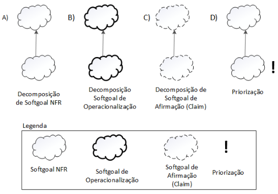
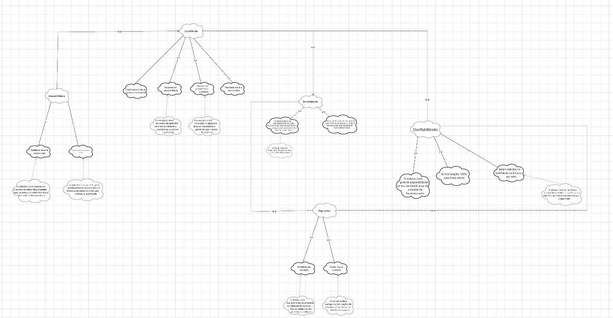

NFR Framework
Introdução
No contexto do desenvolvimento do aplicativo ID Jovem, os Requisitos Não-Funcionais (RNFs) desempenham um papel essencial ao definir qualidades e restrições que afetam diretamente a experiência do jovem beneficiário, a segurança dos dados, o desempenho e a conformidade com as legislações vigentes. Dentre esses requisitos, destaca-se a importância de garantir a proteção das informações pessoais e a confiabilidade na emissão e validação da Identidade Jovem.
Com o objetivo de representar e analisar esses requisitos de maneira estruturada, este trabalho adota o NFR Framework, uma abordagem proposta por Chung et al. (2000). Esse framework possibilita a modelagem dos RNFs por meio de softgoals, que representam objetivos qualitativos sem critérios de satisfação exatos, mas fundamentais para a qualidade do produto.
A representação gráfica desses softgoals é feita através de um grafo SIG (Softgoal Interdependency Graph), que evidencia suas interdependências, influências e possíveis conflitos. Assim, o NFR Framework aplicado ao ID Jovem contribui para o fortalecimento da usabilidade, segurança, confiabilidade e acessibilidade do aplicativo, assegurando que os jovens beneficiários utilizem a plataforma de forma prática e segura.
Revisado por Chat GPT, em 20 de outubro de 2025
SIG - Softgoal Interdependency Graph
O NFR Framework funciona por meio da construção e análise de um grafo chamado Softgoal Interdependency Graph (SIG), que representa graficamente os Requisitos Não-Funcionais (softgoals), suas interdependências, alternativas e justificativas. Esse grafo permite avaliar se os requisitos de alto nível foram atendidos e apoia decisões de projeto voltadas à melhoria do aplicativo ID Jovem.
Tipos de SIG
O SIG é dividido em três tipos principais:
-
Softgoals NFR: representam alternativas técnicas e soluções práticas (como processos, restrições ou estruturas) para atender aos softgoals do aplicativo ID Jovem — por exemplo, garantir desempenho adequado ao emitir o cartão digital.
-
Softgoals de Operacionalização: representam os softgoals e suas interdependências, permitindo identificar conflitos e sinergias, como a relação entre acessibilidade e desempenho no uso do app.
-
Softgoals de Afirmação: trazem justificativas baseadas em características do domínio do ID Jovem (como requisitos de segurança e prioridade de acesso), apoiando decisões e rastreabilidade do sistema.
Figura 1: Tipos de Softgoal

Fonte: SILVA, 2019
Tipos e Interdependências de Softgoals no NFR Framework
- O NFR Framework utiliza três tipos de softgoals, representados por diferentes estilos de nuvens:
- Softgoals NFR: nuvens claras
- Softgoals de Operacionalização: nuvens com linhas grossas
-
Softgoals de Afirmação: nuvens com linhas tracejadas
-
Cada softgoal NFR possui um tipo (ex: Usabilidade) e um tópico (ex: Interface do Usuário), que indicam a parte específica do aplicativo ID Jovem à qual se referem.
-
As interdependências entre os softgoals são classificadas em:
- Refinamentos (top-down), onde um softgoal pai gera filhos mais específicos, podendo ser:
- Decomposição de Softgoal NFR: divide um requisito não-funcional em outros mais detalhados, como dividir “Confiabilidade” em “Disponibilidade” e “Segurança”.
- Decomposição de Operacionalização: refina soluções implementáveis, como criptografia de dados ou autenticação do beneficiário.
- Decomposição de Afirmação: detalha justificativas de projeto, como priorizar o acesso rápido mesmo em conexões móveis limitadas.
- Priorização: refina um softgoal destacando sua importância dentro do aplicativo, como dar prioridade à acessibilidade sobre o desempenho visual.
Essa estrutura permite representar, refinar e justificar de forma clara os requisitos não-funcionais que impactam diretamente a qualidade e a confiabilidade do aplicativo ID Jovem, garantindo que o sistema cumpra seu propósito social com eficiência e segurança.
Figura 2: Tipos e Interdependências de Softgoals no NFR Framework

Fonte: SILVA, 2019
Contribuições e Tipos no NFR Framework
- Durante o refinamento dos softgoals, um softgoal descendente pode contribuir positiva ou negativamente, de forma total ou parcial, para a satisfação do softgoal ascendente.
-
A satisfação de softgoal indica que o requisito não-funcional deve ser atendido dentro de limites aceitáveis, o que é essencial no ID Jovem, pois certos aspectos (como desempenho e segurança) podem influenciar-se mutuamente.
-
AND: todos os descendentes precisam ser satisfeitos para o ascendente ser satisfeito (ex: para alcançar “Segurança”, é necessário satisfazer “Criptografia” e “Validação de Identidade”).
- OR: basta um descendente satisfeito para o ascendente ser satisfeito (ex: “Autenticação” pode ser feita via CPF ou QR Code).
- MAKE (++): contribuição altamente positiva; a satisfação do descendente garante a satisfação do ascendente.
- BREAK (--): contribuição altamente negativa; a satisfação do descendente prejudica o ascendente.
- HELP (+): contribuição parcialmente positiva; satisfação parcial do descendente contribui parcialmente para o ascendente.
- HURT (-): contribuição parcialmente negativa; satisfação do descendente prejudica parcialmente o ascendente.
- UNKNOWN (?): contribuição desconhecida, pode ser positiva ou negativa.
- EQUALS: o descendente só é satisfeito se o ascendente for satisfeito.
- SOME: há um sinal conhecido (positivo ou negativo), mas o grau da contribuição é incerto.
Essas contribuições permitem entender como decisões técnicas no ID Jovem (como escolha de layout, autenticação e performance) afetam a satisfação global dos requisitos de qualidade do sistema.
Revisado por Chat GPT, em 20 de outubro de 2025
Procedimento de Avaliação no NFR Framework
- O procedimento de avaliação determina o grau em que os requisitos não-funcionais (softgoals) são satisfeitos por um conjunto de decisões de projeto.
- Cada softgoal ou interdependência do Softgoal Interdependency Graph (SIG) recebe um rótulo que indica seu status de satisfação.
Tipos de rótulos usados:
- ✓ (satisfeito): O requisito é plenamente atendido.
- $\mathcal{W}^{+}$ (fracamente satisfeito): Atendido parcialmente; impacto positivo moderado.
- X (negado): O requisito não é atendido.
- $\mathcal{W}^{-}$ (fracamente negado): Negação parcial; impacto negativo brando.
- ↯ (conflitante): Há conflito entre requisitos, coexistindo aspectos positivos e negativos.
- u (indeterminado): Não há dados suficientes para determinar o impacto.
No contexto do ID Jovem, essa avaliação permite verificar, por exemplo, se as melhorias na usabilidade não comprometem a segurança dos dados, garantindo um equilíbrio entre experiência do Jovem Beneficiário e conformidade com os requisitos legais e técnicos.
A avaliação é feita de forma hiererárquica: - Inicia-se pelos softgoals de nível mais baixo, relacionados a decisões específicas (como design de tela ou criptografia). - Em seguida, os rótulos são propagados para os níveis superiores, avaliando o impacto cumulativo até os softgoals de alto nível (como “Confiabilidade” e “Segurança da Informação”).
Figura 3: Procedimento de Avaliação no NFR Framework

Fonte: SILVA, 2019
Metodologia
Para aplicar o NFR Framework ao desenvolvimento do aplicativo, adotamos uma abordagem em etapas estruturadas, com o objetivo de identificar, modelar, analisar e tomar decisões relacionadas aos requisitos não funcionais (softgoals) do sistema. A metodologia compreende as seguintes fases:
1. Identificação dos Requisitos Não Funcionais (Softgoals)
Nesta etapa, foram identificados os principais requisitos não funcionais relevantes ao contexto do aplicativo, como:
- Usabilidade
- Desempenho
- Segurança
- Acessibilidade
- Confiabilidade
- Portabilidade
Essa identificação foi baseada em entrevistas com stakeholders, análise de mercado e levantamento de requisitos funcionais relacionados. Os requisitos não funcionais são representados como softgoals, que expressam intenções qualitativas sem critérios rígidos de satisfação.
2. Modelagem com o NFR Framework
A modelagem foi realizada utilizando a notação proposta por Chung et al. (2000), representando os softgoals em uma estrutura hierárquica com relacionamentos de contribuição entre eles. Foram utilizados os seguintes tipos de contribuição:
- MAKE (++)
- HELP (+)
- HURT (-)
- BREAK (--)
- OR
- AND
- EQUALS
- UNKNOWN (?)
- SOME
Também foram especificadas as operacionalizações, ou seja, decisões de projeto que implementam cada softgoal.
Uso do Cartão de Especificação
Durante essa fase de modelagem, utilizou-se o Cartão de Especificação como instrumento de apoio à documentação e análise. Cada cartão foi preenchido com os seguintes elementos:
- Nome do softgoal
- Descrição do requisito não funcional
- Alternativas de operacionalização
- Contribuições com outros softgoals
- Justificativa das decisões
- Responsável e data da análise
Revisado por Chat GPT, em 20 de outubro de 2025
A Tabela 1 ilustra o modelo adotado para a elaboração dos cartões de especificação.
Tabela 1: Template de cartão de especificação
| Requisito Não Funcional – RNFXX | |
|---|---|
| Classificação | Classificação do RNF conforme a hierarquia do catálogo. |
| Descrição | Declaração única do significado do requisito. |
| Justificativa | Justificativa sobre a criação do requisito |
| Origem do Requisito | Origem do requisito (stakeholder, norma técnica e etc...) |
| Critério de Aceitação | Métrica do requisito que possa ser testada e que deve ser satisfeita. |
| Dependências | Requisitos relacionados a este. |
| Prioridade | Um número usado para decidir a importância relativa deste requisito entre os outros RNFs (varia de 1 a 10). A prioridade mínima é 1 e a máxima é 10. |
| Conflitos | Requisitos conflitantes com este. |
| História | Data de criação e de modificações. |
Autor: Arthur Fernandes
O cartão facilitou a rastreabilidade, clareza e consistência das informações, além de permitir uma análise comparativa entre alternativas e apoiar a comunicação com os stakeholders durante a modelagem dos requisitos.
3. Avaliação dos Softgoals
Após modelar os softgoals e suas contribuições, foi realizado o procedimento de avaliação, no qual cada softgoal recebeu um rótulo indicando o grau de satisfação:
✓Satisfeito: Requisito não funcional plenamente atendido.𝒲+Fracamente satisfeito: Satisfação parcial.XNegado: Requisito contradiz outro.𝒲-Fracamente negado: Impacto negativo moderado.🗲Conflitante: Conflito entre requisitos.uIndeterminado: Impacto incerto ou desconhecido.
A avaliação começou pelos softgoals de nível mais baixo (operacionalizações), subindo até os níveis superiores da hierarquia para analisar o impacto global das decisões.
4. Tomada de Decisão
Com base nas análises e rótulos atribuídos, foram tomadas decisões de projeto priorizando as alternativas que maximizassem a satisfação dos softgoals mais críticos.
Em casos de conflito (por exemplo, Desempenho vs. Segurança), foram realizadas ponderações junto aos stakeholders, buscando o melhor compromisso entre eficiência e proteção dos dados do Jovem Beneficiário.
5. Validação
A etapa de validação da modelagem seguiu duas vertentes principais:
-
Rastreabilidade com as histórias de usuário:
Verificou-se se os softgoals contemplavam os desejos e expectativas expressas por cada persona. -
Análise de cobertura:
Avaliou-se se os principais atributos de qualidade esperados para um aplicativo público financeiro — como disponibilidade, desempenho e segurança — foram devidamente modelados.
Essa validação assegurou que os requisitos não funcionais fossem não apenas documentados, mas também rastreáveis, justificáveis e compatíveis com os requisitos funcionais do ID Jovem.
Cronograma de Participantes
Tabela 2: Participação na Elaboração do Documento de NFR Framework
| Nome | Contribuições |
|---|---|
| Arthur Fernandes | • Tabelas 4, 5, 6 (Cartões de Especificação RNF06, RNF07, RNF08) • Figuras 4, 5, 6, 8, 9, 11 (SIGs Geral, Usabilidade, Segurança, Acessibilidade, Confiabilidade, Completo) • Tabela 22 (Avaliação de Impactos - Usabilidade) |
| Breno Lourenço | • Tabelas 19, 20, 21 (Cartões de Especificação RNF22, RNF23, RNF24) • Figura 7 (SIG Desempenho) • Figura 10 (SIG Portabilidade) • Tabela 27 (Avaliação de Impactos - Portabilidade) |
| Dylan Cavalcante | • Tabelas 16, 17, 18 (Cartões de Especificação RNF19, RNF20, RNF21) • Tabela 26 (Avaliação de Impactos - Confiabilidade) |
| Eduarda Domingos | • Tabelas 13, 14, 15 (Cartões de Especificação RNF16, RNF17, RNF18) • Tabela 25 (Avaliação de Impactos - Acessibilidade) |
| Giovana Fontes | • Tabelas 7, 8, 9 (Cartões de Especificação RNF10, RNF11, RNF12) • Tabela 23 (Avaliação de Impactos - Segurança) |
| Letícia Lopes | • Tabelas 10, 11, 12 (Cartões de Especificação RNF13, RNF14, RNF15) • Figura 7 (SIG Desempenho) • Tabela 24 (Avaliação de Impactos - Desempenho) |
Fonte: Letícia Lopes
Requisitos Não-Funcionais
Tabela 3: Requisitos Não-Funcionais utilizados na criação do NFR Framework
| Código | Versão | Descrição | Origem |
|---|---|---|---|
| RNF06 | 1.0 | O aplicativo deve funcionar com baixo consumo de internet e ser acessível em regiões carentes | BS24 |
| RNF07 | 1.0 | O aplicativo deve possuir recursos de acessibilidade (alto contraste, leitura de tela, voz e Libras) | BS20, IDJ09 |
| RNF08 | 1.0 | O sistema deve garantir disponibilidade mínima de 99,5% | BS27 |
| RNF10 | 1.0 | O tempo de carregamento das páginas do site oficial não deve exceder 3 segundos em conexões de internet de baixa velocidade | BS24 |
| RNF11 | 1.0 | O aplicativo deve garantir que as informações sobre os benefícios estejam 100% sincronizadas com a base de dados oficial | IDJ08 |
| RNF12 | 1.0 | O sistema deve ser compatível com as duas versões anteriores dos principais navegadores web e sistemas operacionais móveis | BS15, BS23, ST09 |
| RNF13 | 1.0 | A navegação entre as seções do aplicativo deve ser consistente e previsível para o jovem beneficiário | BS16, ENT17 |
| RNF14 | 1.0 | O aplicativo deve apresentar um feedback visual e sonoro claro para cada interação do jovem beneficiário | BS26 |
| RNF15 | 1.0 | O sistema deve ter um tempo máximo de inatividade de 2 horas por mês, fora das janelas de manutenção programada | BS27 |
| RNF16 | 1.0 | O tempo de resposta para validação da carteirinha (QR Code) não deve exceder 2 segundos | BS28 |
| RNF17 | 1.0 | A equipe de desenvolvimento deve disponibilizar atualizações de segurança e correções de bugs em um ciclo de, no máximo, 3 meses | BS29 |
| RNF18 | 1.0 | O aplicativo deve permitir que o jovem beneficiário personalize o tamanho da fonte e o esquema de cores para melhorar a legibilidade | IDJ18 |
| RNF19 | 1.0 | O sistema deve registrar todas as tentativas de validação da carteira, bem-sucedidas ou não, para fins de auditoria | IDJ19 |
| RNF20 | 1.0 | A consulta à elegibilidade do CadÚnico deve retornar o resultado em no máximo 3 segundos | IDJ20 |
| RNF21 | 1.0 | O sistema deve ter capacidade de ser facilmente escalado para atender a um aumento de 50% no número de jovens beneficiários sem degradação do desempenho | IDJ21 |
| RNF22 | 1.0 | O sistema deve manter um log de auditoria de todas as emissões e validações de carteirinhas por 5 anos | ST12 |
| RNF23 | 1.0 | O aplicativo deve carregar as informações de eventos e parceiros em no máximo 3 segundos, mesmo com grande volume de dados | ST13 |
| RNF24 | 1.0 | O aplicativo deve ser compatível com a API mais recente e as duas versões anteriores do sistema operacional móvel | ST14 |
Fontes: Letícia Lopes e Arthur Fernandes, 2025
Cartão Especificação
Tabela 4: Baixo consumo de internet
| Requisito Não Funcional – RNF06 | |
|---|---|
| Classificação | Usabilidade |
| Descrição | O aplicativo deve funcionar com baixo consumo de internet, garantindo acessibilidade em regiões com conexão limitada e aparelhos de baixa performance. |
| Justificativa | Jovens em regiões carentes podem ter acesso limitado à internet e a dispositivos com menor capacidade de processamento, sendo essencial que o app seja leve e eficiente. |
| Origem do Requisito | BS24 |
| Critério de Aceitação | O aplicativo deve carregar páginas e funcionalidades básicas em até 3 segundos em conexões de internet de baixa velocidade (até 3G) e em dispositivos com memória limitada. |
| Dependências | Otimização de imagens, cache de navegador, compressão de arquivos e interface simplificada para reduzir consumo de dados. |
| Prioridade | 9 |
| Conflitos | RNF08 (Inclusão de mídia pesada) – pode aumentar consumo de dados e reduzir desempenho |
| História | 20/10/2025 |
Fonte: Arthur Fernandes
Tabela 5: Recursos de acessibilidade
| Requisito Não Funcional – RNF07 | |
|---|---|
| Classificação | Usabilidade |
| Descrição | O aplicativo deve possuir recursos de acessibilidade, como alto contraste, leitura de tela, suporte a voz e Libras. |
| Justificativa | Garantir que jovens com deficiência visual, auditiva ou outras necessidades especiais consigam utilizar o aplicativo de forma independente e eficiente. |
| Origem do Requisito | BS20, IDJ09 |
| Critério de Aceitação | O aplicativo deve ser compatível com leitores de tela, permitir alternância de alto contraste e oferecer suporte a Libras em conteúdos essenciais. |
| Dependências | Implementação de alto contraste, suporte a leitores de tela, integração com biblioteca de Libras, compatibilidade com diferentes dispositivos. |
| Prioridade | 10 |
| Conflitos | RNF08 (Disponibilidade do sistema) – ajustes de acessibilidade podem impactar performance se não otimizados |
| História | 20/10/2025 |
Fonte: Arthur Fernandes
Tabela 6: Requisito Não Funcional – RNF08
| Requisito Não Funcional – RNF08 | |
|---|---|
| Classificação | Confiabilidade / Desempenho |
| Descrição | O sistema deve garantir disponibilidade mínima de 99,5% durante o horário de funcionamento. |
| Justificativa | Garantir que os Jovens Beneficiários consigam acessar o aplicativo a qualquer momento, evitando frustrações e interrupções no acesso aos benefícios. |
| Origem do Requisito | BS27 |
| Critério de Aceitação | Monitoramento do sistema deve comprovar que a disponibilidade real não é inferior a 99,5% em um período de 30 dias. |
| Dependências | Infraestrutura de servidores, otimização de processos de atualização e monitoramento contínuo do sistema. |
| Prioridade | 9 |
| Conflitos | Atualizações do sistema podem reduzir temporariamente a disponibilidade se não houver planejamento adequado. |
| História | 20/10/2025 |
Fonte: Arthur Fernandes
Tabela 7: Tempo de carregamento das páginas do site oficial
| Requisito Não Funcional – RNF10 | |
|---|---|
| Classificação | Desempenho |
| Descrição | O tempo de carregamento das páginas do site oficial não deve exceder 3 segundos em conexões de internet de baixa velocidade. |
| Justificativa | Garantir uma boa experiência ao Jovem Beneficiário, mesmo com conexões limitadas, aumentando a acessibilidade do sistema. |
| Origem do Requisito | BS24 |
| Critério de Aceitação | As páginas devem carregar completamente em até 3 segundos em conexões de até 2 Mbps. |
| Dependências | Otimização de imagens, cache de navegador e compressão de arquivos. |
| Prioridade | 8 |
| Conflitos | Recursos gráficos muito pesados podem impactar o desempenho. |
| História | 20/10/2025 |
Fonte: Giovana Fontes
Tabela 8: Sincronização de informações sobre os benefícios
| Requisito Não Funcional – RNF11 | |
|---|---|
| Classificação | Confiabilidade |
| Descrição | O aplicativo deve garantir que as informações sobre os benefícios estejam 100% sincronizadas com a base de dados oficial. |
| Justificativa | Evita inconsistências e garante que o Jovem Beneficiário sempre tenha acesso a informações oficiais e atualizadas. |
| Origem do Requisito | IDJ08 |
| Critério de Aceitação | As informações devem ser atualizadas automaticamente a cada modificação na base oficial, com atraso máximo de 5 minutos. |
| Dependências | API oficial de dados e conexão estável com o servidor governamental. |
| Prioridade | 9 |
| Conflitos | Possíveis atrasos em caso de falha de rede ou servidor instável. |
| História | 20/10/2025 |
Fonte: Giovana Fontes
Tabela 9: Compatibilidade com versões anteriores de navegadores e sistemas operacionais
| Requisito Não Funcional – RNF12 | |
|---|---|
| Classificação | Portabilidade |
| Descrição | O sistema deve ser compatível com as duas versões anteriores dos principais navegadores web e sistemas operacionais móveis. |
| Justificativa | Garante que os Jovens Beneficiários com dispositivos mais antigos também consigam acessar e utilizar o sistema sem limitações. |
| Origem do Requisito | BS15, BS23, ST09 |
| Critério de Aceitação | Compatibilidade confirmada com as duas versões anteriores de navegadores (Chrome, Firefox, Safari) e sistemas Android/iOS. |
| Dependências | Bibliotecas responsivas e testes de compatibilidade entre plataformas. |
| Prioridade | 7 |
| Conflitos | Novas funcionalidades podem ser limitadas por compatibilidade retroativa. |
| História | 20/10/2025 |
Fonte: Giovana Fontes
Tabela 10: Navegação entre seções do aplicativo consistente e previsível para o Jovem Beneficiário
| Requisito Não Funcional – RNF13 | |
|---|---|
| Classificação | Usabilidade |
| Descrição | A navegação entre as seções do aplicativo deve ser consistente e previsível para o jovem beneficiário. |
| Justificativa | Uma navegação previsível e uniforme melhora a experiência do Jovem Beneficiário e reduz a curva de aprendizado no uso do aplicativo. |
| Origem do Requisito | BS16, ENT17 |
| Critério de Aceitação | O jovem beneficiário deve conseguir identificar facilmente onde está e retornar à página inicial sem dificuldade em até dois cliques. |
| Dependências | Framework de UI consistente, padrões de design system, componentes de navegação unificados |
| Prioridade | 8 |
| Conflitos | Possível conflito com RNF10 se a navegação complexa impactar tempo de carregamento |
| História | 20/10/2025 |
Fonte: Letícia Lopes
Tabela 11: Apresentação de feedback visual e sonoro claros para cada interação do Jovem Beneficiário no aplicativo
| Requisito Não Funcional – RNF14 | |
|---|---|
| Classificação | Usabilidade / Acessibilidade |
| Descrição | O aplicativo deve apresentar um feedback visual e sonoro claro para cada interação do jovem beneficiário. |
| Justificativa | Feedback imediato e claro aumenta a confiança do Jovem Beneficiário no sistema e confirma que as ações foram reconhecidas e processadas. |
| Origem do Requisito | BS26 |
| Critério de Aceitação | Todas as interações do Jovem Beneficiário (cliques, toques, envios) devem gerar feedback visual ou sonoro dentro de 500ms. |
| Dependências | Bibliotecas de animação, componentes de feedback visual, APIs de áudio nativas |
| Prioridade | 7 |
| Conflitos | Pode impactar RNF06 se os recursos de feedback consumirem muitos dados |
| História | 20/10/2025 |
Fonte: Letícia Lopes
Tabela 12: Tempo Máximo de inatividade de 2 horas por mês, fora das janelas de manutenção programada
| Requisito Não Funcional – RNF15 | |
|---|---|
| Classificação | Confiabilidade |
| Descrição | O sistema deve ter um tempo máximo de inatividade de 2 horas por mês, fora das janelas de manutenção programada. |
| Justificativa | Garantir que o aplicativo esteja disponível quando o jovem beneficiário precisar acessar seus benefícios e carteirinha digital. |
| Origem do Requisito | BS27 |
| Critério de Aceitação | Monitoramento mensal deve comprovar disponibilidade de 99,72% ou superior (máximo 2 horas de indisponibilidade mensal) |
| Dependências | Infraestrutura de alta disponibilidade, sistemas de load balancing, monitoramento contínuo |
| Prioridade | 9 |
| Conflitos | Pode conflitar com RNF17 se as manutenções exigirem tempo de inatividade adicional |
| História | 20/10/2025 |
Fonte: Letícia Lopes
Tabela 13: O tempo de resposta para validação da carteirinha (QR Code) não deve exceder 2 segundos
| Requisito Não Funcional – RNF16 | |
|---|---|
| Classificação | Desempenho |
| Descrição | O tempo de resposta para validação da carteirinha (QR Code) não deve exceder 2 segundos. |
| Justificativa | Garantir uma experiência ágil e eficiente durante a validação da carteirinha em estabelecimentos parceiros, evitando filas e constrangimentos para o jovem beneficiário. |
| Origem do Requisito | BS28 |
| Critério de Aceitação | O sistema deve validar QR Codes em até 2 segundos em 95% das tentativas, considerando conexões de internet estáveis. |
| Dependências | Serviço de validação online, leitor de QR Code otimizado, conexão com banco de dados. |
| Prioridade | 9 |
| Conflitos | RNF06 (Baixo consumo de internet) - integrações podem aumentar consumo de dados |
| História | 20/10/2025 - Criação |
Fonte: Eduarda Domingos
Tabela 14: A equipe de desenvolvimento deve disponibilizar atualizações de segurança e correções de bugs em um ciclo de, no máximo, 3 meses
| Requisito Não Funcional – RNF17 | |
|---|---|
| Classificação | Usabilidade |
| Descrição | A equipe de desenvolvimento deve disponibilizar atualizações de segurança e correções de bugs em um ciclo de, no máximo, 3 meses. |
| Justificativa | Manter o aplicativo seguro e estável, garantindo proteção contra vulnerabilidades e resolvendo problemas reportados pelos Jovem Beneficiário em tempo hábil. |
| Origem do Requisito | BS29 |
| Critério de Aceitação | Lançamento de atualizações a cada trimestre, com pelo menos 90% das correções críticas implementadas dentro do prazo estabelecido. |
| Dependências | Processo de desenvolvimento ágil, equipe de QA, sistema de versionamento |
| Prioridade | 8 |
| Conflitos | RNF15 (Disponibilidade) - atualizações podem exigir downtime |
| História | 20/10/2025 |
Fonte: Eduarda Domingos
Tabela 15: O aplicativo deve permitir que o jovem beneficiário personalize o tamanho da fonte e o esquema de cores para melhorar a legibilidade
| Requisito Não Funcional – RNF18 | |
|---|---|
| Classificação | Acessibilidade |
| Descrição | O aplicativo deve permitir que o jovem beneficiário personalize o tamanho da fonte e o esquema de cores para melhorar a legibilidade. |
| Justificativa | Garantir que jovens com dificuldades visuais ou preferências específicas possam utilizar o aplicativo com conforto e autonomia. |
| Origem do Requisito | IDJ18 |
| Critério de Aceitação | Opções de pelo menos 3 tamanhos de fonte e 2 esquemas de cores (claro/escuro) devem estar disponíveis e funcionais em todas as telas do aplicativo. |
| Dependências | Sistema de temas, componentes de UI responsivos, armazenamento de preferências |
| Prioridade | 7 |
| Conflitos | RNF10 (Tempo de carregamento) - personalizações podem impactar performance |
| História | 20/10/2025 - Criação |
Fonte: Eduarda Domingos
Tabela 16: Requisito Não Funcional – RNF19
| Requisito Não Funcional – RNF19 | |
|---|---|
| Classificação | Segurança |
| Descrição | O sistema deve registrar todas as tentativas de validação da carteira, bem-sucedidas ou não, para fins de auditoria. |
| Justificativa | Garantir a rastreabilidade das operações, identificar possíveis fraudes e manter a conformidade com normas de segurança e transparência. |
| Origem do Requisito | IDJ19 |
| Critério de Aceitação | 100% das tentativas de validação (bem-sucedidas ou falhas) devem ser registradas em log seguro, incluindo data, hora, resultado e identificador do validador. |
| Dependências | Infraestrutura de logs, política de retenção de dados (ver RNF22). |
| Prioridade | 9 |
| Conflitos | Pode impactar levemente o desempenho (RNF16) devido à escrita de logs; pode exigir mais armazenamento. |
| História | 20/10/2025 |
Fonte: Dylan Cavalcante
Tabela 17: Requisito Não Funcional – RNF20
| Requisito Não Funcional – RNF20 | |
|---|---|
| Classificação | Desempenho |
| Descrição | A consulta à elegibilidade do CadÚnico deve retornar o resultado em no máximo 3 segundos. |
| Justificativa | Proporcionar uma experiência de usuário ágil e evitar que o jovem beneficiário abandone o processo de cadastro devido à lentidão. |
| Origem do Requisito | IDJ20 |
| Critério de Aceitação | O tempo de resposta da API de consulta ao CadÚnico, desde a requisição até a resposta, não deve ultrapassar 3 segundos em 95% das tentativas. |
| Dependências | Disponibilidade e performance da API externa do CadÚnico. |
| Prioridade | 8 |
| Conflitos | A dependência de um serviço externo (CadÚnico) pode tornar difícil garantir esse tempo caso o serviço de origem esteja lento. |
| História | 20/10/2025 |
Fonte: Dylan Cavalcante
Tabela 18: Requisito Não Funcional – RNF21
| Requisito Não Funcional – RNF21 | |
|---|---|
| Classificação | Desempenho |
| Descrição | O sistema deve ter capacidade de ser facilmente escalado para atender a um aumento de 50% no número de jovens beneficiários sem degradação do desempenho. |
| Justificativa | Assegurar que o aplicativo continue funcional e rápido mesmo com o crescimento da base de Jovens Beneficiários ou picos de acesso. |
| Origem do Requisito | IDJ21 |
| Critério de Aceitação | A arquitetura deve suportar um aumento de 50% da carga de Jovens Beneficiários mantendo os tempos de resposta definidos em outros RNFs (ex: RNF10, RNF20). |
| Dependências | Arquitetura em nuvem (auto-scaling), balanceamento de carga. |
| Prioridade | 8 |
| Conflitos | Pode aumentar os custos de infraestrutura. |
| História | 20/10/2025 |
Fonte: Dylan Cavalcante
Tabela 19: Requisito Não Funcional – RNF22
| Requisito Não Funcional – RNF22 | |
|---|---|
| Classificação | Segurança |
| Descrição | O sistema deve manter um log de auditoria de todas as emissões e validações de carteirinhas por 5 anos. |
| Justificativa | Garantir conformidade legal (ex: Marco Civil da Internet, LGPD) e permitir auditorias futuras sobre o uso do benefício e a emissão de carteiras. |
| Origem do Requisito | ST12 |
| Critério de Aceitação | Os logs de emissão e validação devem ser armazenados de forma segura (imutável) e retidos por um período mínimo de 5 anos. |
| Dependências | Infraestrutura de logs, política de retenção de dados (ver RNF19). |
| Prioridade | 8 |
| Conflitos | Pode aumentar significativamente o custo de armazenamento de dados a longo prazo. |
| História | 20/10/2025 |
Fonte: Breno Teixeira
Tabela 20: Requisito Não Funcional – RNF23
| Requisito Não Funcional – RNF23 | |
|---|---|
| Classificação | Desempenho |
| Descrição | O aplicativo deve carregar as informações de eventos e parceiros em no máximo 3 segundos, mesmo com grande volume de dados. |
| Justificativa | Manter o Jovem Beneficiário engajado e evitar que ele abandone a consulta de eventos ou parceiros devido à lentidão do carregamento. |
| Origem do Requisito | ST13 |
| Critério de Aceitação | O tempo de carregamento da lista de eventos/parceiros (com paginação ou scroll infinito) não deve exceder 3 segundos em uma conexão 4G padrão. |
| Dependências | API otimizada (com paginação), cache local no dispositivo. |
| Prioridade | 7 |
| Conflitos | Pode conflitar com RNF11 (Sincronização 100%) se a busca por dados em tempo real impedir o uso de cache. |
| História | 20/10/2025 |
Fonte: Breno Teixeira
Tabela 21: Requisito Não Funcional – RNF24
| Requisito Não Funcional –RNF24 | |
|---|---|
| Classificação | Portabilidade |
| Descrição | O aplicativo deve ser compatível com a API mais recente e as duas versões anteriores do sistema operacional móvel. |
| Justificativa | Assegurar que o aplicativo funcione para a grande maioria dos Jovens Beneficiários, que não necessariamente possuem a última versão do SO, equilibrando inovação e suporte retroativo. |
| Origem do Requisito | ST14 |
| Critério de Aceitação | O aplicativo deve ser testado e garantir funcionamento pleno nas versões (N, N-1, N-2) do Android e iOS no momento de cada release. |
| Dependências | Pipeline de CI/CD com testes em múltiplos emuladores/dispositivos, RNF12. |
| Prioridade | 7 |
| Conflitos | Manter compatibilidade com versões muito antigas (N-2) pode impedir o uso de novas APIs e recursos de segurança das plataformas. |
| História | 20/10/2025 |
Fonte: Breno Teixeira
NFR00: Geral
A figura 4 a seguir demonstra o Gráfico de Interdependência do Softgoal de uma maneira geral.
Figura 4: Geral

Fonte: Arthur Fernandes
NRF01: Usabilidade
Descrição:
Este Softgoal Interdependency Graph (SIG) foi elaborado para representar visualmente os aspectos relacionados à usabilidade no sistema Id Jovem. Ele demonstra como certos requisitos não funcionais influenciam positivamente ou negativamente esse atributo de qualidade, estruturando os relacionamentos entre metas e submetas de forma hierárquica.
Requisitos:
Requisitos utilizados para compor o SIG da Figura 5:
- RNF06: O aplicativo deve funcionar com baixo consumo de internet e ser acessível em regiões carentes;
- RNF07: O aplicativo deve possuir recursos de acessibilidade (alto contraste, leitura de tela, voz e Libras);
- RNF13: A navegação entre as seções do aplicativo deve ser consistente e previsível para o jovem beneficiário;
- RNF14: O aplicativo deve apresentar um feedback visual e sonoro claro para cada interação do jovem beneficiário;
- RNF17: A equipe de desenvolvimento deve disponibilizar atualizações de segurança e correções de bugs em um ciclo de, no máximo, 3 meses.
A figura 5 a seguir demonstra o Gráfico de Usabilidade.
Figura 5: Usabilidade
Fonte: Arthur Fernandes
Propagação dos Impactos:
A Tabela 22 apresenta a avaliação da propagação dos impactos identificados na Figura 5.
Tabela 22: Avaliação dos Impactos dos Requisitos sobre Usabilidade
| NFR | Impacto | Avaliador |
|---|---|---|
| RNF06 - Funcionar com baixo consumo de internet | ✓ | Arthur Fernandes |
| RNF07 - Recursos de acessibilidade (alto contraste, leitura de tela, voz e Libras) | ✓ | Arthur Fernandes |
| RNF13 - Navegação consistente e previsível | ✓ | Arthur Fernandes |
| RNF14 - Feedback visual e sonoro claro | ✓ | Arthur Fernandes |
| RNF17 - Atualizações a cada 3 meses | 𝒲⁺ | Arthur Fernandes |
Fonte: Arthur Fernandes
Justificativa baseada na metodologia do documento:
- RNF06 (✓): "Satisfeito" - Baixo consumo garante acesso em regiões carentes e melhora experiência do Jovem Beneficiário
- RNF07 (✓): "Satisfeito" - Recursos de acessibilidade ampliam o público e tornam o app mais inclusivo
- RNF13 (✓): "Satisfeito" - Navegação consistente reduz curva de aprendizado e facilita uso
- RNF14 (✓): "Satisfeito" - Feedback claro aumenta confiança do Jovem Beneficiário nas interações
- RNF17 (𝒲⁺): "Fracamente satisfeito" - Atualizações melhoram estabilidade, mas podem exigir adaptação do Jovem Beneficiário
NFR02: Segurança
Descrição:
Este SIG (Softgoal Interdependency Graph) foi elaborado com base nos requisitos não funcionais relacionados à segurança do sistema no que tange aos dados. A segurança é responsável por garantir que os dados do Jovem Beneficiário e de todas as partes envolvidas no uso do sistema tenham uma camada de proteção contra a exposição indesejada das suas informações.
Requisitos:
Requisitos utilizados para desenvolver o SIG da Figura 6:
- RNF19: O sistema deve registrar todas as tentativas de validação da carteira, bem-sucedidas ou não, para fins de auditoria;
- RNF22: O sistema deve manter um log de auditoria de todas as emissões e validações de carteirinhas por 5 anos.
Figura 6: Segurança
Fonte: Arthur Fernandes
Propagação dos Impactos:
A Tabela 23 apresenta a avaliação da propagação dos impactos identificados na Figura 6.
Tabela 23: Avaliação dos Impactos dos Requisitos sobre Segurança
| NFR | Impacto | Avaliador |
|---|---|---|
| RNF19 - Registrar tentativas de validação para auditoria | ✓ | Giovana Fontes |
| RNF22 - Manter log de auditoria por 5 anos | ✓ | Giovana Fontes |
Fonte: Giovana Fontes
Justificativa baseada na metodologia do documento:
- RNF19 (✓): "Satisfeito" - Registro completo de tentativas garante rastreabilidade e detecção de atividades suspeitas
- RNF22 (✓): "Satisfeito" - Retenção de logs por 5 anos atende requisitos legais e permite auditorias de longo prazo
NFR03: Desempenho
Descrição:
Este SIG (Softgoal Interdependency Graph) foi elaborado com base nos requisitos não funcionais relacionados ao desempenho do sistema. O desempenho é responsável por garantir que o aplicativo ID Jovem ofereça tempos de resposta ágeis e disponibilidade adequada, proporcionando uma experiência eficiente para os jovens beneficiários durante o acesso aos benefícios e validação da carteirinha.
Requisitos:
Requisitos utilizados para desenvolver o SIG da Figura 7:
- RNF08: O sistema deve garantir disponibilidade mínima de 99,5% durante o horário de funcionamento.
- RNF10: O tempo de carregamento das páginas do site oficial não deve exceder 3 segundos em conexões de internet de baixa velocidade
- RNF16: O tempo de resposta para validação da carteirinha (QR Code) não deve exceder 2 segundos.
- RNF20: A consulta à elegibilidade do CadÚnico deve retornar o resultado em no máximo 3 segundos.
- RNF23: O aplicativo deve carregar as informações de eventos e parceiros em no máximo 3 segundos, mesmo com grande volume de dados.
Figura 7: Desempenho

Fonte: Breno Teixeira
Propagação dos Impactos:
A Tabela 24 apresenta a avaliação da propagação dos impactos identificados na Figura 7.
Tabela 24: Avaliação dos Impactos dos Requisitos sobre Desempenho
| NFR | Impacto | Avaliador |
|---|---|---|
| RNF08 - Garantir disponibilidade mínima de 99,5% | ✓ | Letícia Lopes |
| RNF10 - Tempo de carregamento ≤ 3 segundos | ✓ | Letícia Lopes |
| RNF16 - Validação QR Code ≤ 2 segundos | ✓ | Letícia Lopes |
| RNF20 - Consulta CadÚnico ≤ 3 segundos | 𝒲⁺ | Letícia Lopes |
| RNF23 - Carregamento eventos/parceiros ≤ 3 segundos | 𝒲⁺ | Letícia Lopes |
Fonte: Letícia Lopes
Justificativa baseada na metodologia do documento:
- RNF08 (✓): "Satisfeito" - Meta clara de disponibilidade que impacta diretamente no desempenho do sistema
- RNF10 (✓): "Satisfeito" - Tempo específico de carregamento essencial para experiência do Jovem Beneficiário
- RNF16 (✓): "Satisfeito" - Operação crítica com métrica rigorosa para funcionalidade central
- RNF20 (𝒲⁺): "Fracamente satisfeito" - Consulta externa com tempo definido, mas dependente de serviço terceiro
- RNF23 (𝒲⁺): "Fracamente satisfeito" - Funcionalidade importante mas com menor criticidade que operações centrais
NFR04: Acessibilidade
Descrição:
Este SIG (Softgoal Interdependency Graph) foi elaborado a partir de requisitos não funcionais relacionados à acessibilidade do sistema. Esses requisitos garantem que o aplicativo seja inclusivo e acessível a todos os usuários, incluindo aqueles com deficiências visuais, auditivas ou motoras, promovendo uma experiência mais equitativa e usável.
Requisitos:
Requisitos utilizados para desenvolver o SIG da Figura 8:
- RNF14: O aplicativo deve apresentar um feedback visual e sonoro claro para cada interação do jovem beneficiário.
- RNF18: O aplicativo deve permitir que o jovem beneficiário personalize o tamanho da fonte e o esquema de cores para melhorar a legibilidade.
Figura 8: Acessibilidade
Fonte: Arthur Fernandes
Propagação dos Impactos:
A Tabela 25 apresenta a avaliação da propagação dos impactos identificados na Figura 8.
Tabela 25: Avaliação dos Impactos dos Requisitos sobre Acessibilidade
| NFR | Impacto | Avaliador |
|---|---|---|
| RNF14 - Feedback visual e sonoro claro | ✓ | Eduarda Domingos |
| RNF18 - Personalização de fonte e cores | ✓ | Eduarda Domingos |
Fonte: Eduarda Domingos
Justificativa baseada na metodologia do documento:
- RNF14 (✓): "Satisfeito" - Feedback multimodal atende Jovens Beneficiários com diferentes capacidades sensoriais
- RNF18 (✓): "Satisfeito" - Personalização de interface beneficia Jovens Beneficiários com baixa visão ou preferências específicas
NFR05 - Confiabilidade
Descrição:
Este SIG (Softgoal Interdependency Graph) foi elaborado com base nos requisitos não funcionais relacionados à confiabilidade do sistema. A confiabilidade garante que o sistema execute suas funções de maneira consistente, sem falhas, mesmo em situações adversas, como conexões instáveis ou dependências externas.
Requisitos:
Requisitos utilizados para desenvolver o SIG da Figura 9:
- RNF08: O sistema deve garantir disponibilidade mínima de 99,5% durante o horário de funcionamento.
- RNF11: O aplicativo deve garantir que as informações sobre os benefícios estejam 100% sincronizadas com a base de dados oficial.
- RNF15: O sistema deve ter um tempo máximo de inatividade de 2 horas por mês, fora das janelas de manutenção programada.
Propagação dos Impactos:
Figura 9: Confiabilidade

Fonte: Arthur Fernandes
Propagação dos Impactos:
A Tabela 26 apresenta a avaliação da propagação dos impactos identificados na Figura 9.
Tabela 26: Avaliação dos Impactos dos Requisitos sobre Confiabilidade
| NFR | Impacto | Avaliador |
|---|---|---|
| RNF08 - Disponibilidade mínima de 99,5% | ✓ | Dylan Cavalcante |
| RNF11 - Sincronização 100% com base oficial | ✓ | Dylan Cavalcante |
| RNF15 - Tempo máximo de inatividade 2h/mês | ✓ | Dylan Cavalcante |
Fonte: Dylan Cavalcante
Justificativa baseada na metodologia do documento:
- RNF08 (✓): "Satisfeito" - Alta disponibilidade garante acesso contínuo aos benefícios
- RNF11 (✓): "Satisfeito" - Sincronização completa assegura informações atualizadas e confiáveis
- RNF15 (✓): "Satisfeito" - Tempo limitado de inatividade mantém sistema operacional e confiável
NFR06 - Portabilidade:
Descrição:
Este SIG (Softgoal Interdependency Graph) foi elaborado com base nos requisitos não funcionais relacionados à portabilidade do sistema. A portabilidade é responsável por garantir que o aplicativo ID Jovem funcione de maneira consistente em diferentes plataformas e versões de sistemas operacionais, assegurando amplo acesso aos jovens beneficiários independentemente do dispositivo utilizado.
Requisitos:
Requisitos utilizados para desenvolver o SIG da Figura 10:
- RNF12: O sistema deve ser compatível com as duas versões anteriores dos principais navegadores web e sistemas operacionais móveis.
- RNF24:O aplicativo deve ser compatível com a API mais recente e as duas versões anteriores do sistema operacional móvel.
Figura 10: Portabilidade

Fonte: Breno Teixeira
Propagação dos Impactos:
A Tabela 27 apresenta a avaliação da propagação dos impactos identificados na Figura 10.
Tabela 27: Avaliação dos Impactos dos Requisitos sobre Portabilidade
| NFR | Impacto | Avaliador |
|---|---|---|
| RNF12 - Compatibilidade com versões anteriores | ✓ | Breno Teixeira |
| RNF24 - Compatibilidade com APIs de SO | ✓ | Breno Teixeira |
Fonte: Breno Teixeira
Justificativa baseada na metodologia do documento:
- RNF12 (✓): "Satisfeito" - Compatibilidade retroativa amplia o público e garante acesso universal
- RNF24 (✓): "Satisfeito" - Suporte a múltiplas APIs assegura funcionamento em diferentes versões de Sistema Operacional
SIG Completo
Descrição
Este SIG (Softgoal Interdependency Graph) foi elaborado a partir de todos os requisitos não funcionais elicitados do sistema. Ele mostra todas as relações entre os SIGs anteriores em um único grafo, possibilitando a visualização geral das dinâmicas entre eles.
Figura 11: Portabilidade
Fonte: Arthur Fernandes
Validação
Gravação 1 - Validação Dylan e Arthur
Fonte: Giovana Fontes, 2025
Gravação 2 - Validação Eduarda e Leticia
Fonte: Giovana Fontes, 2025
Gravação 3 - Validação Breno e Giovana
Fonte: Giovana Fontes, 2025
Referências Bibliográficas
1. SILVA, Reinaldo Antônio da. NFR4ES: um catálogo de requisitos não-funcionais para sistemas embarcados. 2019. 154 f. Dissertação (Mestrado em Ciência da Computação) – Universidade Federal de Pernambuco, Recife, 2019. [ Disponível em: https://repositorio.ufpe.br/handle/123456789/37024].
2. CHUNG, Lawrence; NIXON, Brian A.; YU, Eric; MYLLOPULOS, John. Non-functional requirements in software engineering. Springer Science & Business Media, 2000. [ Disponível em: https://books.google.com.vc/books?id=MNrcBwAAQBAJ&printsec=frontcover#v=onepage&q&f=false].
- Lucidchart. Diagramação com inteligência. 2025. [ Disponível em: https://www.lucidchart.com/pages/pt]. Acesso em: 21 out. 2025.
Histórico de Versão
| Versão | Data | Descrição | Autor(es) | Revisor(es) |
|---|---|---|---|---|
1.0 |
19/10/2025 | Criação inicial do documento de NFR | Arthur Fernandes | Dylan Cavalvante |
1.1 |
19/10/2025 | Adição de Cartões de Especificação RNF06, RNF07, RNF08 | Arthur Fernandes | Dylan Cavalvante |
1.2 |
20/10/2025 | Adição de Cartões de Especificação RNF10, RNF11, RNF12 | Giovana Fontes | Letícia Lopes |
1.3 |
20/10/2025 | Adição de todos os RNFs na tabela 3, adição de hiperlinks na página | Letícia Lopes | Arthur Fernandes |
1.4 |
20/10/2025 | Adição de Cartões de Especificação RNF13, RNF14, RNF15 | Letícia Lopes | Arthur Fernandes |
1.5 |
20/10/2025 | Adição de Cartões de Especificação RNF19, RNF20, RNF21 | Dylan Cavalcante | Letícia Lopes |
1.6 |
20/10/2025 | Adição de Cartões de Especificação RNF16, RNF17, RNF18 | Eduarda Domingos | Dylan Cavalcante |
1.7 |
20/10/2025 | Adição de Cartões de Especificação RNF22, RNF23, RNF24 | Breno Teixeira | Arthur Fernandes |
1.8 |
21/10/2025 | Adição de NFR00-Geral | Letícia Lopes | Arthur Fernandes |
1.9 |
21/10/2025 | Adição de NFR01-Usabilidade, NFR02-Segurança | Arthur Fernandes, Giovana Fontes | Letícia Lopes |
2.0 |
21/10/2025 | Adição de NFR03-Desempenho, NFR04-Acessibilidade | Letícia Lopes, Eduarda Domingos | Arthur Fernandes |
2.1 |
21/10/2025 | Adição de NFR05-Confiabilidade, NFR06-Portabilidade | Dylan Cavalcante, Breno Teixeira | Letícia Lopes |
2.2 |
21/10/2025 | Adição de gravações de validação | Giovana Fontes | Arthur Fernandes |
2.3 |
21/10/2025 | Adição de imagem dos NFR | Arthur Fernandes | Giovana Fontes |
2.4 |
21/11/2025 | Correção dos hiperlinks existentes | Breno Teixeira | Giovana Fontes |
2.5 |
21/11/2025 | Adição de novos hiperlinks | Breno Teixeira | Giovana Fontes |
2.6 |
21/11/2025 | refinamento para a entrega final | Breno Teixeira | Giovana Fontes |
Agrecimentos
Queremos agradecer ao Chat GPT, ferramenta de Inteligência Artificial Generativa, pelo apoio durante o desenvolvimento deste projeto ID Jovem. Sua ajuda foi essencial na revisão de textos, na organização das ideias e na pesquisa de conteúdos complementares que contribuíram para deixar nossa documentação mais clara e completa.
De acordo com o Código de Conduta da Sociedade Brasileira de Computação (SBC), destacamos que a ferramenta foi utilizada apenas como apoio técnico e linguístico. Todo o conteúdo apresentado é de autoria do Grupo 04, que assume total responsabilidade por sua originalidade e precisão.